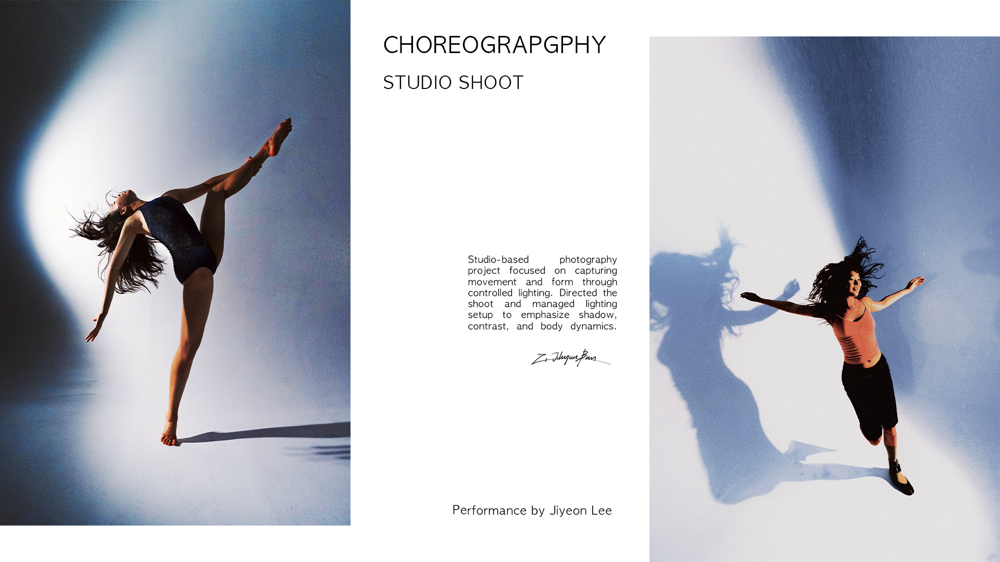

03
Studio Project
Directed a studio-based choreography and profile shoot focused on movement, shadow, and controlled visual tension.


Project Overview
This project combined choreography documentation and profile photography through a directed studio setup. The visual direction centered on movement, gesture, shadow, and the performer’s physical presence.
Rather than approaching the shoot as a standard portrait session, the images were shaped through performance-based direction, controlled lighting, and editorial sequencing.